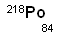

Unit 1: Matter, Chemical Bonding, and Chemical Trends
Activity 3: Terms and Vocabulary
Content
Did you know?
 |
Around 400 BC, an ancient Greek philosopher, Democritus, was the first person to use the term “atomos” to describe the concept that all living and non-living things were made of an infinite number of tiny indivisible particles. “Atomos” means ”indivisible” and hence the term atom. He believed that empty space was found between these atoms and that these atoms could not be destroyed. Physical properties like sharp rocks, or liquids that flow were the result of different shapes, arrangements and positions of these atoms. This theory of atomism did not survive long because he did not base his theory on observation or experimentation. He was a philosopher. His theory of atomism did not return until the years of Galileo, over 1800 years later! |
|---|
The Atom
The fundamental building block of matter is the atom. The atom itself is composed of smaller particles. These subatomic particles are the electrons, neutrons and protons.
Note: These particles are really tiny and so their masses are represented by an atomic mass unit (amu).
Isotopic Symbols and Isotopes
Symbols represent their respective element on the periodic table. An isotopic symbol represents the element’s isotope. The number of protons identifies the element. Each element has its own respective number of electrons. The arrangement of the elements in the periodic table is by atomic number (Z) (number of protons). An isotope is an atom of the same element but its mass number (A) is different. Isotopes of an element have the same number of protons but the number of neutrons is different. To find the number of neutrons, you subtract the atomic number from the mass number. For example:
# n = A – Z
Using the isotopes of sulphur as an example, we have the following:
Sulphur-32 has 16 protons and 16 neutrons.
Sulphur-33 has 16 protons and 17 neutrons.
Sulphur-34 has 16 protons and 18 neutrons.
Sulphur-36 has 16 protons and 20 neutrons.
The isotopic symbol represents the element’s symbol, mass number and atomic number. Its general symbol is the following:
Note: The element’s symbol in this example is the “X”. Example
Example
The isotopic symbol for sulphur-34 is
Radioisotopes
Did you know?
| |
Radioisotopes are commonly used as tracers in medicine. When doctors want to find out how a certain element is behaving in a person’s body, a very tiny amount of that radioisotope is mixed in with the regular element in the medicine that is given to the person. By using a Geiger counter, doctors are able to monitor the path of a certain radioisotope inside the body by recording the tiny amounts of radiation that can be detected by the Geiger counter. |
|---|
Some isotopes are radioactive. This means that the nucleus of the isotope changes into another isotope. This is known as a nuclear reaction or radioactive decay. The particles that a radioisotope could emit include a proton (alpha particle), neutron or an electron (beta particle) from its nucleus.
Did you know?
| |
Some smoke detectors used in houses, contain Americium-241, which emits an alpha particle. The nuclear reaction would be as follows: |
|---|
Example
Radon-222 is a gaseous radioisotope produced by radioactive uranium deep beneath the Earth’s surface and can sometimes be found in basements because it seeps through tiny cracks in the basement floor or walls? Radon emits an alpha particle, too.
Examine the previous nuclear reaction and predict the isotope when radon-222 emits an alpha particle:

Relative Atomic Mass (Arr)
Scientists have decided to use the carbon-12 atom as a standard to which the mass of other atoms are compared. One mass unit (u), formally known as an atomic mass unit (amu), is 1/12 the mass of the carbon-12 atom.
However, an element consists of a number of naturally occurring isotopes. Each of these isotopes has a different mass because of the different number of neutrons found in their respective nucleus. Each isotope contributes a certain fraction of the relative atomic mass of the element. The relative atomic mass of an element is based on the abundance of each isotope. The symbol for relative atomic mass is Ar. The formula is as follows:
Example
Natural chlorine consists of 75.53% chlorine-35, and 24.47% chlorine-37. What is the relative atomic mass of chlorine?
 Solution
Solution
The relative atomic mass of chlorine is 35.49 u.
Practice Exercise
- Find the relative atomic mass of the element given the percentages of the respective abundances.
Element Isotope % Abundance Relative Atomic Mass Lithium lithium-6 7.42 lithium-7 92.58 Magnesium magnesium-24 78.70 magnesium-25 10.13 magnesium-26 11.17
Journal
 |
You will begin to keep a journal for this course. This journal can be as simple as an ongoing SCH3U word document! As you add new material, be sure to date the material and list the unit and activity number of the journal entry. Characteristics of atomic particles, isotopic symbols, isotopes, radioisotopes, relative atomic mass, atomic orbital, effective nuclear charge, atomic radius, ionization energy, electron affinity, electronegativity, ionic bond, covalent bond, isoelectronic, polar covalent bond, pure covalent bond, valence electron, Lewis symbol. To help you with these notes and definitions, you may use the Chemistry Terms Glossary, the Internet or, use the information provided on the content page above. |
|---|
 Resources
Resources
This is a disclaimer. External Resources will open in a new window. Not responsible for external content.
Unless otherwise indicated, all images in this Activity are from the public domain or are © clipart.com or Microsoft clipart and are used with permission.